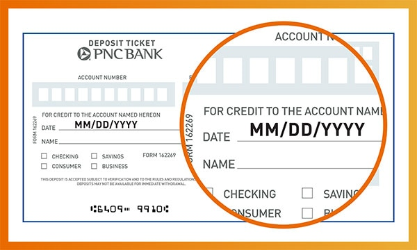
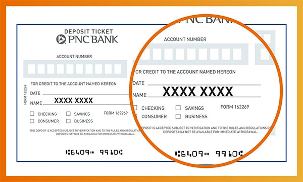
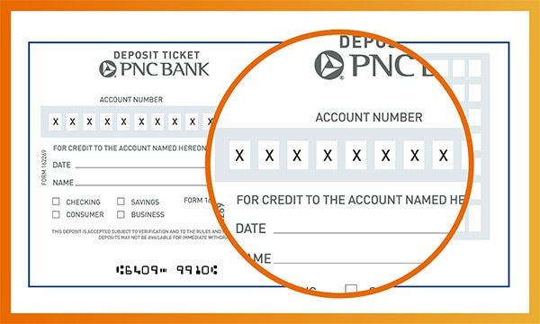
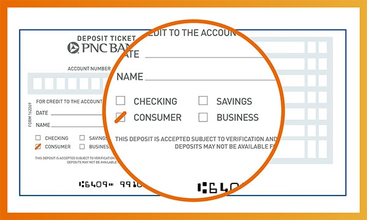
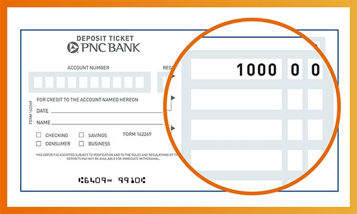
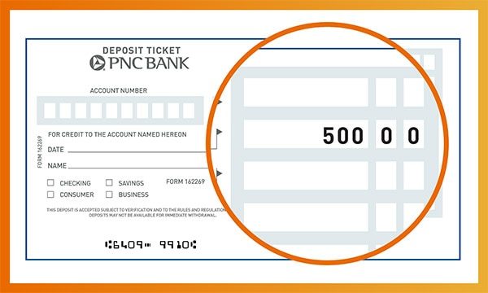
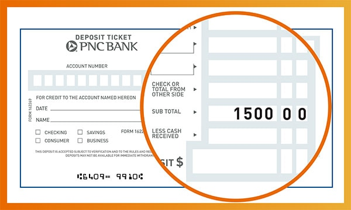
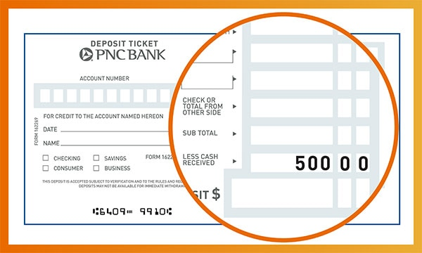
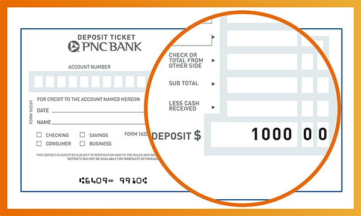
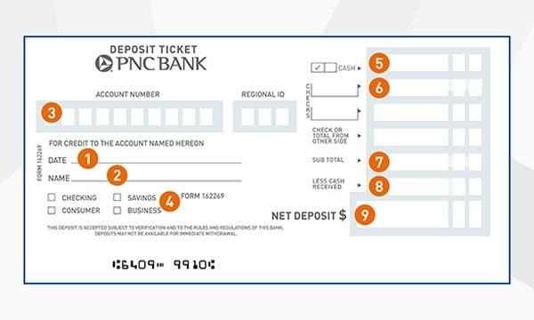

Knowing how to fill out a deposit slip correctly can help ensure that your money quickly ends up in the right account. Luckily, learning how to use a deposit slip is not difficult.
In this article, we'll include detailed instructions on how to fill out a deposit slip, as well as the benefits of using these forms. We’ll also include an example of a deposit slip for easy reference.
What Is A Deposit Slip?
A deposit slip — sometimes also known as a deposit ticket — is a form printed on paper that allows account holders to deposit cash or checks into their bank or credit union accounts. Typically, deposit slips include fields to enter information such as your name, account number, the numbers of any deposited checks, deposit amount, and transaction date.
Deposit slips are most often used when customers visit a brick-and-mortar bank branch. They can be used to make deposits both in the lobby and in the bank's drive-through lane. In addition, some older ATMs require customers to use a deposit slip when depositing cash or checks.
Generally, when you order a set of checks from your bank, a pad of deposit slips will be included in the checkbook. You can also often find deposit slips in your bank's lobby. It's important to have your deposit slip filled out before asking a teller to deposit your funds.
Step-By-Step Instructions For Filling Out A Deposit Slip
Here are the steps for filling out a deposit slip:
1. Write the current date in the space provided.

2. Write your first and last names in the correct field exactly as they appear on your checking or savings account.

3. Write your account number in the appropriate space, if necessary. If you received your deposit slip as part of your check order, your bank account number may already be printed on the slip. The deposit slip might also require you to supply your bank's routing number. PNC's deposit slips include a space for a three-digit Regional ID code; however, it's not required to supply this code when making a deposit. The teller will fill it in for you.

4. Specify whether you wish your deposit to go to a checking, savings, or business account.

5. Add up all of the cash to be deposited and write the total in the space next to "Cash."

6. List all the checks to be deposited, including the check numbers and dollar amounts, in the space marked "Checks." If you have several checks, you may need to list them in the provided space on the back of the deposit slip. If you don't have any checks to deposit, leave this part of the deposit slip blank.

7. Add up the subtotal of your deposit. This includes all of the checks and cash that are being deposited. Write this amount in the "Subtotal" section.

8. Write down how much cash back you'd like to receive from the transaction, if any, in the space marked "Less Cash" (or similar).

9. Subtract the cash received, if any, from the subtotal and put the amount of money you're depositing on the line usually marked "Total" or "Net Deposit."

10. Sign the deposit slip on the signature line, if required.
11. Submit the deposit slip, along with the cash and checks to be deposited, to the bank teller. The teller will process your deposit and provide a receipt. The teller may also give you a copy of your submitted deposit slip. If submitting your deposit to an ATM, be sure to include the deposit slip, along with all of the cash and checks listed on it, in a sealed envelope.
Here's a deposit slip example to show you where to place the correct information. However, deposit slip designs may vary based on the bank or credit union.

Benefits Of Deposit Slips
Deposit slips can be beneficial to both the bank and the client. Banks use submitted deposit slips as a written record of funds deposited during the day. This helps banks make sure that there are no funds left unaccounted for. According to federal law, banks must maintain deposit slips representing transactions over $100 for at least five years[1].
At the same time, bank customers can use their copy of a deposit slip as a receipt and proof that funds have been deposited and that the bank has acknowledged the receipt of funds.
This can be useful if deposited funds don't appear in your checking account within a few business days, and you need proof that the transaction was completed.
Your bank may also provide a receipt in addition to — or instead of — a duplicate of your deposit slip. This also provides proof that the deposit was made. However, the receipt likely won't show as many transaction details as a copy of a deposit slip.
Alternatives To Traditional Deposit Slips
Due to the growing popularity of online banking, paper deposit slips have become less common in recent years. Even when making a deposit in person, your bank may be able to process your transaction using the debit or ATM card associated with your account instead of a deposit slip.
Similarly, fewer ATMs require users to submit a deposit slip because new technology allows the computers in ATMs to read checks and count cash.
In addition, mobile deposits — which are typically made through your bank's smartphone app — typically don't require you to fill out a deposit slip. That's because most bank apps now can scan paper checks for the information required to make a deposit.
The Bottom Line
Even though these bank forms may have fallen out of favor in recent years, it's important to know how to fill out a deposit slip correctly when funding your checking or savings account. Using a deposit slip can ensure that your money gets to its proper destination as smoothly and quickly as possible. You can also keep copies of deposit slips as receipts to prove that your bank accepted your transaction.